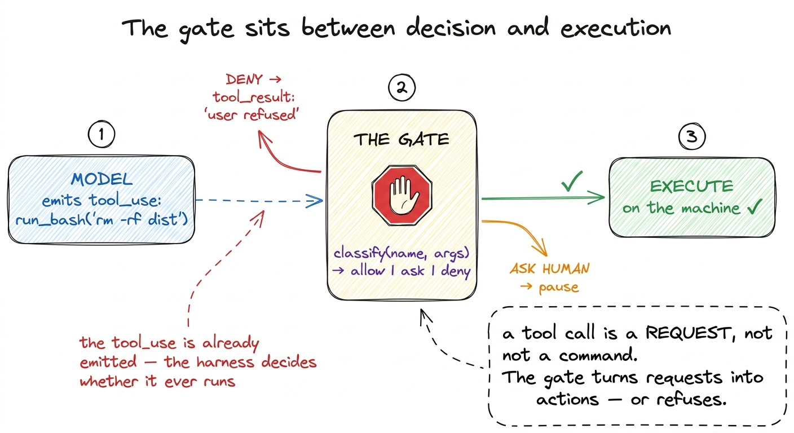
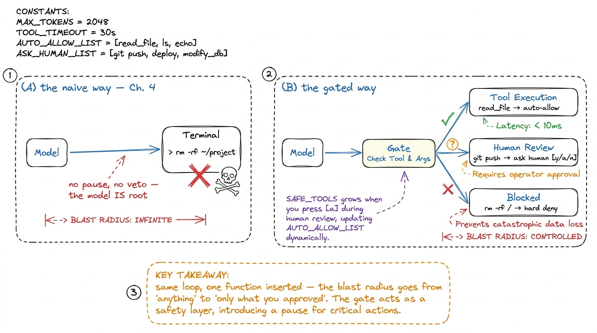
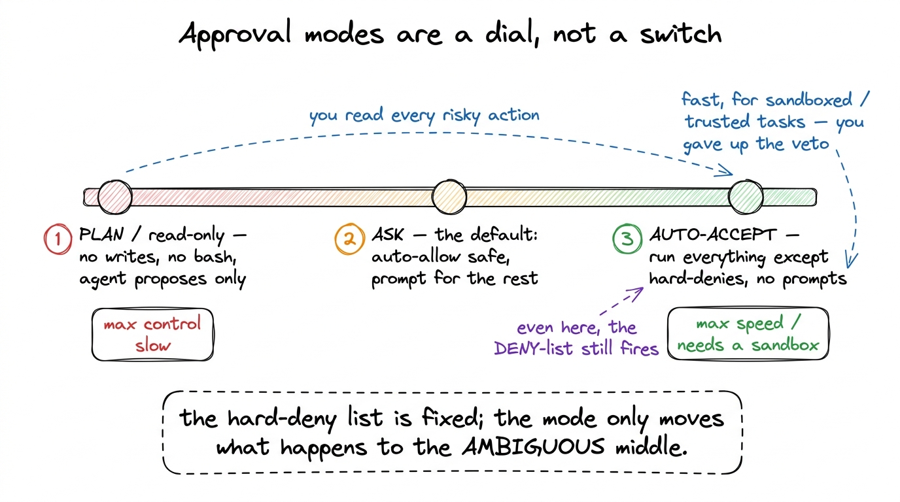
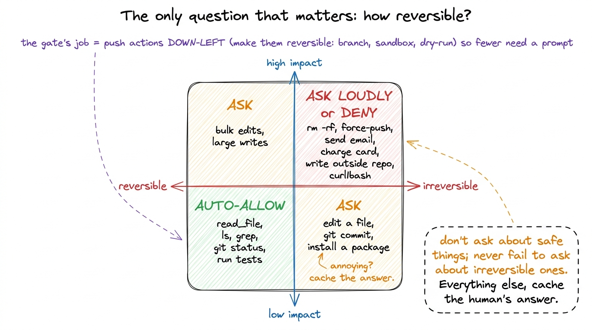

Permission gates & approval modes
In the last chapter I wrote a run_bash tool that took whatever string the model handed it and ran it on my actual machine, no questions asked. I told you we were leaving something out on purpose. This is that chapter, and the thing we left out is the single most important line of defense between a helpful agent and a very bad afternoon.
Here is the uncomfortable truth about the loop you built: the model is now holding the shell. Every lap, it can decide — with the same casual confidence it uses to read a file — to run rm -rf, git push --force, curl | bash, or DROP TABLE. It will almost always be trying to help. But "almost always" is not a property you want protecting your home directory. So before a tool call reaches the machine, we insert a checkpoint that a human (or a policy) can veto. That checkpoint is the permission gate, and designing it well — safe without being maddening — is Layer 2's real craft.
Why Claude Code asks before rm
Open Claude Code, ask it to clean up some build artifacts, and watch what happens. It reasons, it picks a command, and then — instead of running it — it stops and shows you:
Claude wants to run:
rm -rf ./dist ./build
[y] yes [a] yes, and don't ask again for rm [n] no, tell Claude what to doThat pause is not the model being polite. The model already decided to run the command; it emitted a tool_use block and, as far as it's concerned, the job is done. The pause is the harness intercepting that block before execution. This is the whole point of the gate: the decision to call a tool and the act of executing it are two separate events, and the harness owns the space between them.

figure rendering · The gate lives in the gap between the model deciding to call a tool anIn our bare harness, run_tool executed the instant the model asked. We are going to slide one function in front of it.
The smallest gate that works
A gate is just a classifier: given a tool name and its arguments, return one of three verdicts — allow, ask, or deny. Here is the whole idea in fifteen lines.
def check_permission(name, args):
# 1. read-only tools are always safe — auto-allow
if name in SAFE_TOOLS: # read_file, list_dir, grep …
return "allow"
# 2. some things are never OK, no matter who asks
if name == "run_bash" and is_dangerous(args["cmd"]):
return "deny" # rm -rf /, curl|bash, fork bombs
# 3. everything else: stop and ask the human
return "ask"
SAFE_TOOLS = {"read_file", "list_dir", "grep"}
def is_dangerous(cmd):
patterns = ["rm -rf /", ":(){", "curl", "| sh", "| bash", "> /dev/sd"]
return any(p in cmd for p in patterns)Now we thread it into the loop. The only change from the last chapter is that run_tool gets a bouncer:
def guarded_run_tool(name, args):
verdict = check_permission(name, args)
if verdict == "deny":
return "BLOCKED: this action is not permitted."
if verdict == "ask":
print(f"\nClaude wants to run: {name}({args})")
answer = input(" [y]es / [a]lways / [n]o: ").strip().lower()
if answer == "a":
SAFE_TOOLS.add(name) # remember this choice for the session
elif answer != "y":
return "User declined. Do not retry; ask what they'd prefer."
return run_tool(name, args) # the real execution from Ch. 4Read what just happened, because four of the five approval behaviors real harnesses ship with are already here. Auto-allow for read-only tools (nobody wants a confirmation prompt for reading a file). A hard deny for a small set of catastrophic patterns. An ask for everything in between. And the [a]lways branch — the "yes, and don't ask again" — which mutates the allow-list at runtime so the agent learns your tolerances as the session goes.

figure rendering · Left: the bare loop hands the model root. Right: a single classifier iThat "do not retry" wording in the decline message matters more than it looks. When you refuse, the refusal goes back to the model as a tool result — it becomes part of the conversation.1 This is why the gate lives inside the tool-result path and not off to the side. A denial isn't an exception that crashes the run; it's information the model reads and adapts to, exactly like a file's contents or a command's stderr. Handle it the same way you handle any tool result. If you just say "no," a stubborn model may propose the same command three more times. Tell it why and what to do instead, and it re-plans instead of nagging.
Allow-lists, deny-lists, and why order matters
Notice the classifier checks deny before ask, and allow before deny. That ordering is a policy, and it is the part people get subtly wrong. The rule of thumb: the most specific, most dangerous check wins. A blanket "allow all bash" that runs before the rm -rf deny would be worse than no gate at all, because it would give you a false sense of safety.
Real harnesses express this as configuration rather than hard-coded if statements. Claude Code, for instance, reads permission rules from a settings file — you list patterns like Bash(npm run test:*) to always allow your test command, or Read(./secrets/**) to always deny reading a sensitive directory, and those rules persist across sessions.2 Claude Code stores these in .claude/settings.json, and the [a]lways button you press in the UI simply appends a rule to that file. The runtime allow-list we built with SAFE_TOOLS.add(name) is the ephemeral, in-session version of the same idea — ours forgets when the process exits; the config version remembers. The shape is always the same triple — allow-list, deny-list, ask-for-the-rest — but pushing it into config is what lets a team agree on a policy once instead of each engineer re-deciding every prompt.
# the same policy, expressed as data instead of code
PERMISSIONS = {
"allow": ["read_file", "list_dir", "grep", "run_bash(npm test:*)"],
"deny": ["run_bash(rm -rf /*)", "read_file(**/.env)", "run_bash(*curl*|*)"],
# anything matching neither list falls through to "ask"
}The move from code to data is not cosmetic. It means the gate becomes auditable — you can read the policy without reading the harness — and it means non-programmers can tune it. That is exactly the boundary a security-conscious team wants.
Modes: auto-accept vs. ask
So far every non-safe action stops for a human. That is the right default, and it is also, after the fortieth prompt, exhausting. Anyone who has driven a coding agent through a big refactor knows the feeling: you are just mashing y, y, y, and the confirmations have stopped being a safety feature and become muscle memory — which means they've stopped being safety at all. A prompt you always approve without reading protects nothing.
So harnesses expose modes — a global dial that shifts the default verdict for the ambiguous middle.

figure rendering · Modes shift the default for ambiguous actions along a spectrum — fromWiring modes in is one more parameter on the gate:
def check_permission(name, args, mode="ask"):
if name in SAFE_TOOLS:
return "allow"
if is_hard_denied(name, args):
return "deny" # <-- fires in EVERY mode, always
if mode == "plan":
return "deny" # read-only: refuse all mutations
if mode == "auto":
return "allow" # trust the agent, skip the prompt
return "ask" # the sane defaultThe load-bearing detail is the placement of the is_hard_denied check: it sits above the mode switch, so rm -rf / is refused even in auto mode. This is the invariant that makes auto-accept survivable — the mode moves the default for the fuzzy middle, but it can never unlock the actions that are catastrophic under any circumstances. Claude Code calls its fast setting "accept edits" / auto-accept; pi and Cursor have equivalents. Every one of them keeps a floor of things that stay forbidden no matter what.3 Auto-accept and a sandbox are two halves of one design, and this is the crossing point between this chapter and the next. Auto-accept is only sane when the blast radius is bounded — a throwaway container, a git branch, a copy of the data. If you can hand the agent the keys and guarantee it can't hurt anything real, the human-in-the-loop prompt becomes optional rather than essential. Anthropic's "Building effective agents" makes the same point: match the amount of human oversight to how reversible the action is.
Designing gates that are safe without being annoying
Everything above is mechanism. The judgment is in where you draw the lines, and there is a principle that cuts through it: gate on consequence, not on tool. The interesting axis is not "is this bash?" — it is "is this reversible?" Reading a file, running the tests, git status, ls — all trivially undoable, all fine to auto-allow. Deleting files, force-pushing, sending an email, hitting a payment API, writing outside the project directory — hard or impossible to undo, all worth a human's eyes.

figure rendering · Gate on reversibility, not on tool type. Auto-allow the undoable, alwaFrom that quadrant fall four rules I'd tattoo on any gate design:
Never prompt for read-only work. If the worst case is "the agent saw something," don't interrupt. A gate that cries wolf on read_file trains the human to stop reading prompts, which quietly disables the gate for the calls that matter.
Cache the human's decision. The [a]lways branch is not a convenience, it's a safety feature: it converts a repeated prompt (which gets rubber-stamped) into a one-time decision (which gets considered). Ask once, remember the answer, and you spend the human's scarce attention on genuinely new situations.
Make the prompt legible. A good gate shows the exact command, the working directory, and ideally a one-line "why" from the model, so the human can actually evaluate it in the half-second they'll spend. Claude wants to run a command is useless; run: git push --force origin main (in ~/prod-repo) is a decision you can make.
Push actions toward reversible. The deepest move is to change the action instead of just judging it. Route file edits through a diff the human approves, run destructive commands against a copy, do the write on a git branch. Every action you make undoable is an action that no longer needs a nervous prompt — which is precisely how you get fewer interruptions and more safety at the same time, instead of trading one for the other.
What the gate buys you, and what it still misses
With one classifier slid in front of run_tool, your harness crossed a real line. Before, the model had root and your trust was blind. Now every action is a request the harness can veto, the catastrophic ones are refused unconditionally, the safe ones flow without friction, and the human is asked exactly about the decisions that need a human — and asked only once. That is Layer 2's first job done.
But look at what the gate assumes and does not provide. It decides whether a command may run; it does nothing to limit the damage if an approved command turns out worse than it looked. You approve run_bash(python cleanup.py) believing it tidies a folder, and it walks up three directories and deletes your photos — the gate said yes, because you said yes, and it has no walls to contain the fallout. Permission is about whether; containment is about how far. A serious harness needs both, and they are genuinely different mechanisms.4 This is the classic defense-in-depth pairing: the gate is the lock on the door, the sandbox is the fact that the room is a bunker. You want the lock even inside the bunker, and the bunker even behind the lock — because humans approve the wrong thing, and models occasionally ask for exactly the wrong thing.
So we have the whether. Next we build the how far — the walls that bound what an approved action can touch, so that "yes" is a decision you can afford to be occasionally wrong about: sandboxing and blast radius.